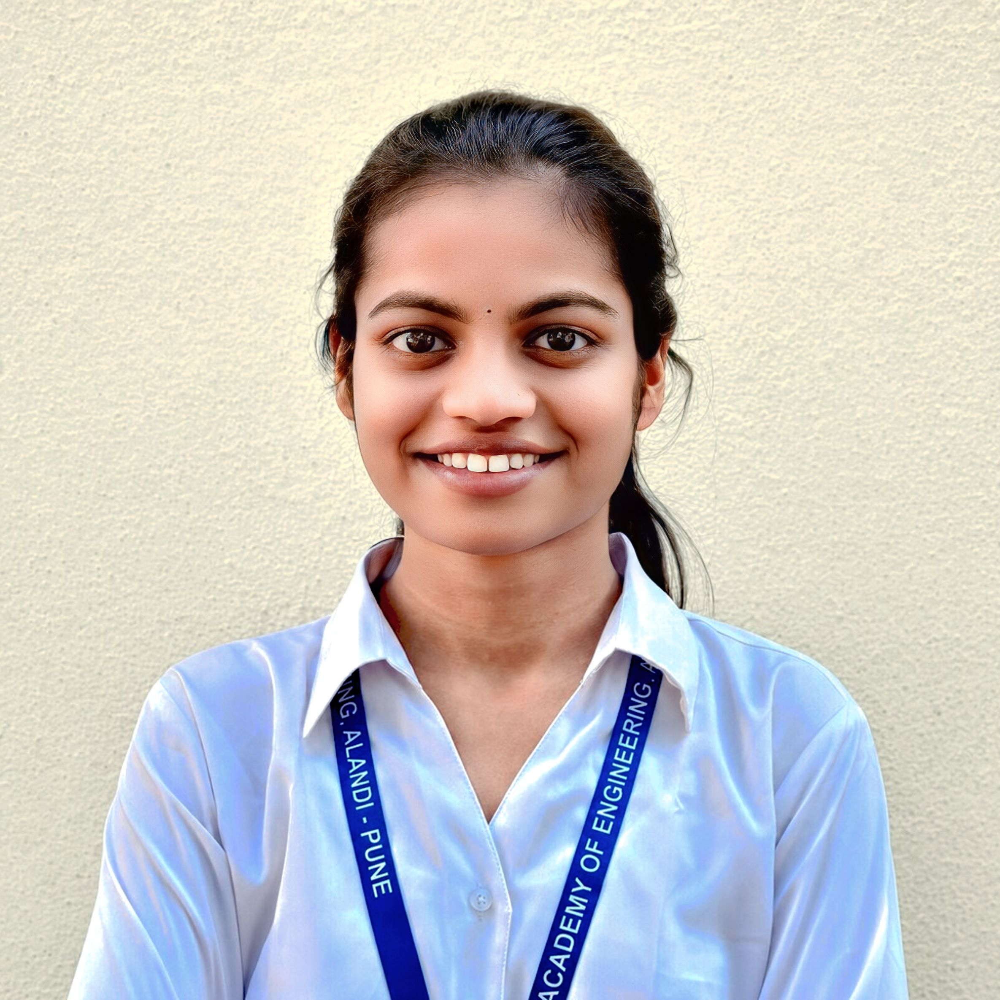

AI & Machine Learning
Machine Learning, Deep Learning, NLP, Computer Vision, Generative AI, RAG
Available for AI/ML opportunities
Hi, I’m Gangotri Kompalwar.
An AI/ML-focused final-year B.Tech student with hands-on experience in machine learning, deep learning, NLP, computer vision and generative AI.

About me
I am pursuing a B.Tech in Electronics and Telecommunication Engineering at MIT Academy of Engineering, Pune, after completing a Diploma in Computer Engineering. My work combines strong programming foundations with an interest in responsible, useful artificial intelligence.
I enjoy turning ideas into complete applications—from preparing data and evaluating models to creating accessible interfaces and documenting reproducible results.
Technical toolkit
A practical toolkit for building, evaluating, and presenting intelligent applications.
Machine Learning, Deep Learning, NLP, Computer Vision, Generative AI, RAG
Python, SQL, C++, Java, Data Structures & Algorithms, Object-Oriented Programming
Scikit-learn, TensorFlow, PyTorch, LangChain, LangGraph, FastAPI, Streamlit
Git, GitHub, Jupyter Notebook, Google Colab, Arduino, ESP8266
Selected work
Generative AI · Education
An offline smart-village education assistant designed for low-connectivity environments, combining RAG, TinyLLaMA, multilingual voice and text support, and adaptive quizzes.
View project ↗Machine Learning · Healthcare
A chronic kidney disease prediction system exploring preprocessing, class imbalance handling and comparative evaluation of multiple classification algorithms.
View project ↗Machine Learning · Sustainability
A data-driven application for forecasting energy consumption and identifying opportunities to reduce waste using machine-learning models and interactive analysis.
View project ↗NLP · Text Classification
An end-to-end NLP classification project using text preprocessing, TF-IDF, Naive Bayes and Logistic Regression, with verified metrics and automated tests.
View project ↗Computer Vision · Deep Learning
A documented computer-vision laboratory covering object detection, instance segmentation, classification, benchmarking and reproducible output validation.
View project ↗Embedded Systems · Accessibility
An Arduino-based mobility prototype using dual ultrasonic sensors and distinct buzzer alerts to detect front obstacles and ground-depth hazards.
View project ↗Experience
Internship experience across artificial intelligence, Python programming and web development.
Jun – Aug 2025
Developed machine-learning workflows in Python, applying preprocessing, feature engineering, visualization and model evaluation.
Apr – May 2025
Strengthened Python programming through object-oriented development, file handling, exception handling, automation and data-analysis tasks.
Jun – Jul 2023
Built a responsive nature-tourism website using HTML, CSS and JavaScript, with backend form processing, validation and persistent data management.
Education
2023 – 2027
2022 – 2024
N.E.S. Science College Shri Nagar, Nanded
MSBSHSE · 94.17%Pratibha Niketan High School, Nanded
MSBSHSE · 93.80%Credentials
Let’s connect
I am seeking entry-level AI/ML roles and internships where I can contribute, learn and build meaningful technology.